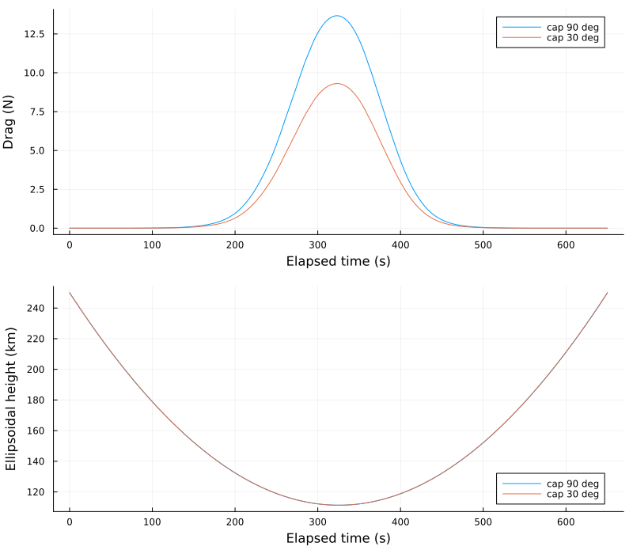

Odyssey guidance and control with a frozen atmosphere
Use a surrogate when you want to work on your guidance, control or autonomy algorithm with a reproducible atmospheric environment. The example uses the named odyssey_p20_frozen_v1 atmosphere, version 1.0.0. It requires the Julia GRAMSuite package, but no native GRAM installation or GRAM data directory. That package is the public Julia wrapper, which the setup step below installs; it is not NASA's GRAM Suite 2.0 software, which only the native GRAM backend needs.
The example propagates Odyssey's P20 aerobraking passage and runs the existing maximum-energy-depletion guidance and panel controller. It compares a 90-degree panel-angle cap with a 30-degree cap. Both runs use the same atmosphere, initial state, force models and solver settings. The example checks that the controller applies each cap and that the trajectory and accumulated panel heating change.
Run the example
From the root of the SpaceAGORA checkout, install the dedicated example environment. It pins the public Julia wrapper and uses the current SpaceAGORA checkout. All paths on this page are relative to the repository root. Blocks marked "Terminal" are typed at the shell prompt there (PowerShell or Command Prompt on Windows, a terminal on Linux/macOS); blocks marked "Julia REPL" go to the julia> prompt. Terminal, from the repository root:
julia --project=examples/odyssey_surrogate_env examples/odyssey_surrogate_env/setup.jl
julia --project=examples/odyssey_surrogate_env examples/odyssey_surrogate.jlThe setup script changes two things in the checkout. It clones the EDG guidance companion from GitHub into packages/gnc/SpaceAGORAEDG.jl (a Git submodule, so the first setup needs network access), and it adds that companion to the example environment, which rewrites the tracked file examples/odyssey_surrogate_env/Project.toml. git status then lists that file as modified; this is expected, and the resolved Manifest.toml beside it stays untracked. The root project's own instantiate is not a prerequisite: this environment resolves its own manifest, including SpaceAGORA's dependencies.
After pulling a newer SpaceAGORA, run the setup script again. It moves the environment to the GRAMSuite revision the checkout now pins, which a plain Pkg.instantiate() of an earlier setup would not do.
The first setup downloads and compiles several hundred packages, so it can take from a few minutes to much longer on a busy machine; later setups reuse them. On a machine with an empty Julia depot, expect downloads on the order of a gigabyte and a depot (~/.julia by default) that grows by a few gigabytes once compiled caches and this example's assets are included.
Each command-line run starts a new Julia process, which compiles the example before its first passage; expect a pause of a few minutes. The first command in a new example environment, even --help, also loads and compiles its packages; later commands reuse that work. The example prints a reminder of this before its first passage, and the run time it reports for that passage includes the compilation, so the baseline case looks much slower than the variant that follows it. That difference is compilation, not the panel angle, and wall_s in each summary.toml records that same run time, compilation included for the first case. An interactive session compiles once and reuses the code for later runs. When the comparison finishes, it prints the absolute path of its results directory and the files it wrote there. "Inspect the result" below describes them.
For a notebook or an interactive session, select that same environment before including the example: start Julia from the repository root with julia --project=examples/odyssey_surrogate_env, or run ] activate examples/odyssey_surrogate_env in a session started there. The include path is relative to the repository root. Julia REPL:
include("examples/odyssey_surrogate.jl")
using .OdysseySurrogateExample
comparison = OdysseySurrogateExample.compare_panel_caps(output_dir="output/odyssey_notebook");The trailing semicolon keeps the REPL from printing the returned tables. Give each run a new directory; the examples on this page use directories under output/, which git ignores.
The preset resolver installs the identified atmosphere once, and the scenario helper supplies the four identified public SPICE kernels and Mars gravity coefficients. Each first installation prints one line naming its source and one confirming that its SHA256 checksums match. The files, about 224 MB in total (a 47 MB grid and 176 MB of kernels and coefficients), are stored in the artifacts/ folder of your Julia depot, by default ~/.julia/artifacts. The atmosphere grid is published under CC BY 4.0: cite it by preset name and version, and credit NASA's GRAM Suite (Mars-GRAM) as the source model. The scenario assets keep the original terms of the NAIF kernels and gravity coefficients (see the GRAMSuite.jl repository). To list, prefetch or check presets without running the example, use the commands in Named surrogate data. Subsequent runs reuse installed files. An offline run requires these assets to be installed already. Terminal, from the repository root:
julia --project=examples/odyssey_surrogate_env examples/odyssey_surrogate.jl --offline --output=output/odyssey_offlineEach invocation needs a new output directory: an existing one is refused, so earlier results are never overwritten. Pass --output=DIR on the command line, or output_dir="DIR" in Julia. A missing or incompatible asset produces an error. It does not start native GRAM or substitute another atmosphere.
The example replaces the process's SPICE kernel pool with its four pinned kernels. Run it in a separate Julia session if your notebook also uses another SPICE scenario.
Change an active setting
For a single run, change panel_cap_deg. Julia REPL, in the example environment:
run = OdysseySurrogateExample.run_case(
panel_cap_deg=45.0,
output_dir="output/odyssey_cap_45",
);run_case returns a named tuple. summary is the dictionary written to summary.toml, rows holds the samples written to trajectory.csv, common is the sample at the 600-second comparison time and endpoint is the sample at the outbound 250 km crossing.
To compare another cap with the 90-degree baseline, pass it on the command line. --help lists all options. Terminal, from the repository root:
julia --project=examples/odyssey_surrogate_env examples/odyssey_surrogate.jl --help
julia --project=examples/odyssey_surrogate_env examples/odyssey_surrogate.jl --cap=60 --output=output/odyssey_cap_60The second command runs the 90-degree baseline and a 60-degree variant. It writes cap_90_deg/, cap_60_deg/ and comparison.toml in output/odyssey_cap_60/. --baseline-cap=DEG changes the baseline. Both caps must be in (0, 90] degrees and must differ. The same comparison from the Julia REPL, in its own directory:
comparison = OdysseySurrogateExample.compare_panel_caps(
variant_cap_deg=60.0,
output_dir="output/odyssey_cap_60_julia",
);The setting becomes max_alpha_rad in AerobrakingEnergyDepletionConfig. Guidance selects maximum energy depletion, and the controller commands the cap on spacecraft links 2 and 3 every 0.1 seconds. The guidance interval is 3 seconds. Aerodynamics and heating use the articulated panel geometry through fixed_attitude_incidence=:attitude; spacecraft attitude itself is not integrated.
This is a prescribed panel-cap exercise. Its thermal threshold is infinite, and it performs no targeting or heat-load prediction. It does not demonstrate closed-loop thermal protection, actuator rate limits or hardware dynamics. The reported heating comes from the production thermal model and integrated heat loads, rather than the controller's internal heat-rate estimate.
configure_case in the example shows how to replace the guidance and control configuration while retaining the atmosphere and scenario. The unchanged P20 regression remains a separate reference with guidance and control disabled. Results from this active-control exercise do not inherit a mission-accuracy claim from that reference.
EDG state between runs and passes
A fresh run_simulation initializes EDG state, including its counters. The paired guidance and controller must share one AerobrakingEnergyDepletionState with one entry per spacecraft and matching configurations. Default simulation isolation preserves this pairing in the run-owned copy. Reusing a configuration starts a fresh run; isolate_state=false also resets EDG state, while leaving ownership of all other mutable configuration to the caller.
Atmospheric entry and exit use the simulator's existing boundary events. Each changed spacecraft loses its cached bracket, switch times and mode flags. Repeated delivery of the same crossing does not clear a new plan, and ordinary callbacks within a pass retain their cache. Bracketing counts accumulate within a run; last-command telemetry remains until the next control update. Propagated physical heat loads and panel geometry are not cleared by this reset.
Startup and crossing reconciliation share one boundary convention: within 64 floating-point spacings of the entry-interface radius, outward motion is outside and inward or tangential motion is inside. This ensures that a plan computed at an exact-boundary outbound start is invalidated on the next entry. The startup flag also selects the initial solver phase when the simulation uses atmosphere-dependent solver settings. Outbound starts in this band therefore begin with orbit-phase settings, including in non-EDG configurations.
A known limit remains for an exact-boundary start with zero radial velocity that subsequently rises, such as a periapsis exactly on the entry interface. It is classified as inside. In the reviewed witness, the mask stays inside through the coast, so a guidance plan computed at time zero survives the next entry; atmospheric solver settings can also persist during that coast. The outbound-start correction does not fix this tangential-start case. Its boundary classification and test expectations are retained; acceleration-based tangency handling requires a separate reviewed change.
EDG enables the existing crossing pipeline even when both solver phases have identical settings. That pipeline also enables staged density updates when the dynamics require density, exit-time thruster scheduling (which may call guidance), and phase-setting reapplication. Added root-finding stops can change the integration path; unchanged guidance formulas do not imply bitwise-identical trajectories.
At exit, invalidating the old mode makes the next control update use the fresh-pass default for the configured modes: minimum angle for targeting-only EDG, or maximum angle when maximum depletion is configured. The effect relative to retaining the previous pass's command depends on whether its switch occurred:
| Configuration | Previous pass's switch | Before exit invalidation | After exit invalidation |
|---|---|---|---|
| Targeting only | Completed | Minimum | Minimum, unchanged |
| Targeting only | Still ahead | Maximum | Minimum |
| Targeting plus maximum depletion | Completed | Minimum | Maximum |
| Targeting plus maximum depletion | Still ahead | Maximum | Maximum, unchanged |
These between-pass commands can affect forces above the entry interface when density, solar pressure or attitude coupling remains active. The reset itself does not change panel geometry.
Maximum-depletion control may be configured without guidance. Targeting control requires paired guidance to establish its bracket. EDG checkpoint writing and resume are refused before output creation because the checkpoint format does not preserve EDG pass state. The stored switch_recompute_interval_s setting remains inactive; this lifecycle rule does not introduce periodic re-solving.
EDG prediction and panel application
EDG computes the prediction, mode, switch times and constrained angle command. The control callback applies that command to the panels at the same control times as before. Computing a decision alone leaves panel geometry and propagated heat loads unchanged. The existing pass-reset rules, numerical limits and separate prediction/control panel selections remain in force.
Inspect the result
Unless you pass --output=DIR (or output_dir in Julia), the comparison writes to odyssey_surrogate_results/ in the current directory, and run_case writes to odyssey_surrogate_<cap>/, for example odyssey_surrogate_45.0/. Both print the absolute path when they finish. The comparison directory contains:
cap_90_deg/trajectory.csvandcap_30_deg/trajectory.csv, named after the compared caps: sampled height, latitude, longitude, density, temperature, panel commands, drag, panel heat rates, accumulated heat loads and Cartesian states.- A
summary.tomlbeside each table: preset and scenario provenance, resolved start time, solver result, measured runtime and state at a common elapsed time. comparison.toml: the baseline and variant caps (baseline_cap_deg,variant_cap_deg) and the position, velocity and panel-heating differences at 600 seconds, while both trajectories remain in the atmosphere domain.
The three differences are lengths of difference vectors at the 600-second comparison time, so they are never negative and carry no direction: position_difference_m is the distance in metres between the two inertial positions, velocity_difference_m_s the magnitude in m/s of the difference of the two velocities, and panel_heat_load_difference_norm_J_cm2 the Euclidean norm in J/cm² of the per-panel differences between the two runs' accumulated heat loads (one entry per panel). To see which run is ahead or hotter, compare the signed columns of the two trajectory.csv files, for example by plotting them. The example's own environment does not include Plots, so use the repository's root environment, instantiated as in Installation & Environment. Julia REPL started with julia --project=. from the repository root, after the default comparison:
using CSV, DataFrames, Plots
dir = "odyssey_surrogate_results"
baseline = CSV.read(joinpath(dir, "cap_90_deg", "trajectory.csv"), DataFrame)
variant = CSV.read(joinpath(dir, "cap_30_deg", "trajectory.csv"), DataFrame)
drag = plot(baseline.elapsed_s, baseline.drag_N; label="cap 90 deg",
xlabel="Elapsed time (s)", ylabel="Drag (N)")
plot!(drag, variant.elapsed_s, variant.drag_N; label="cap 30 deg")
height = plot(baseline.elapsed_s, baseline.height_km; label="cap 90 deg",
xlabel="Elapsed time (s)", ylabel="Ellipsoidal height (km)")
plot!(height, variant.elapsed_s, variant.height_km; label="cap 30 deg")
savefig(plot(drag, height; layout=(2, 1), size=(800, 700)),
joinpath(dir, "passages.png"))For the default comparison the saved figure looks like this:

For another pair of caps, change the directory and the two cap_*_deg folder names to the ones your run printed.
The Cartesian states are Mars-centred J2000 inertial position in metres and velocity in m/s: the columns x_m, y_m, z_m, vx_m_s, vy_m_s and vz_m_s in trajectory.csv, and initial_state_m_m_s and common_state_m_m_s in summary.toml. This is the frame of the SPICE initial state, and each summary.toml records it as state_frame. In the same table, height_km is ellipsoidal height, latitude_deg geodetic latitude and longitude_deg east longitude, the conventions of the preset's domain.
The atmosphere provenance in summary.toml describes how the published preset was made. Its generation_provenance.runtime_wrapper_revision is the GRAMSuite revision used to generate and publish the grid, not necessarily the one running now. The revision your session runs is pinned in examples/odyssey_surrogate_env/Project.toml and recorded in that folder's Manifest.toml.
summary.toml carries three timestamps that are easy to confuse. requested_start_utc and start_utc, at the top of the file, are the simulation's start: the instant at which the initial state is read from the Odyssey kernel. Under [atmosphere.atmosphere], epoch_utc is the frozen epoch of the atmosphere snapshot, the instant whose Mars-GRAM state the grid stores; advancing simulation time never changes it. Under [atmosphere.generation_provenance], payload_created_at_utc is the date on which the grid file was generated and packaged for publication. It describes the data product, not the mission, and it is the only one of the three that is not a 2001 date.
Each run stops at its outbound 250 km ellipsoidal-height crossing, so solver_retcode = "Terminated" in summary.toml is the normal result. The common-time comparison avoids confusing a control effect with a difference in the exit event's timing. The example's small nonzero effect checks establish that the selected setting is active. They are not accuracy tolerances or release requirements.
The cap is constant after activation. Historical force and heat-rate sampling in this example therefore uses the same panel geometry. A time-varying controller needs its panel geometry recorded alongside each state before applying this postprocessing pattern.
Runtime in each summary covers the simulation and its sample recording. It excludes package loading and initial asset resolution. The first run may include compilation, so the two wall times are not a fair algorithm-performance comparison.
To query the frozen atmosphere directly, for example along your own trajectory, load both packages in the example environment, build the model and call getDensity. Julia REPL:
using SpaceAGORA
import GRAMSuite # the public wrapper that provides the grid atmosphere
model = surrogate_preset_model("odyssey_p20_frozen_v1"; version="1.0.0")
rho, temperature, wind = SpaceAGORA.getDensity(model, 150e3, deg2rad(60.0), deg2rad(30.0), 0.0, true)The arguments are ellipsoidal height in metres, geodetic latitude and east longitude in radians, elapsed time in seconds and a Bool wind flag. This frozen snapshot ignores the elapsed time, and the flag does not remove its stored winds. The call returns density in kg/m³, temperature in kelvin and the east, north and up wind components in m/s. Atmosphere Models gives the domain policy, and Extensibility the full interface.
Atmospheric and scenario assumptions
The grid stores density, temperature and east/north/up winds. Its atmosphere is frozen at 2001-11-07T11:51:04.794789Z (epoch_utc in summary.toml), with the recorded Mars-GRAM TES Mapping Year 2 configuration. Advancing simulation time does not change these fields. The example starts near 2001-11-07T11:45:45.690115Z; the initial state is queried from the identified Odyssey kernel at the engine's resolved start time.
The stored domain is 100 to 260 km ellipsoidal altitude, 40 to 90 degrees geodetic north latitude, and periodic east longitude. The Mars equatorial and polar radii are 3,396,190 and 3,376,200 metres. A query outside the height or latitude bounds fails. A named preset fixes this policy: surrogate_preset_model rejects grid options such as above_grid=:vacuum with an ArgumentError. Atmosphere Models shows the generic grid model for other policies; queries below the floor fail with either model. The example uses nominal stored winds; wind=false is not a supported way to remove winds from this preset.
Exact-pole winds retain the native longitude-label convention, which does not define a unique physical horizontal vector there. The retained P20 passage avoids the exact pole, and the example records its maximum latitude. A new algorithm must keep its resulting trajectory inside the supported domain and address pole winds if it uses them.
Force models are degree/order 20 Mars gravity harmonics, Sun/Earth/Moon/Jupiter gravity, solar radiation pressure and free-molecular aerodynamics. The spacecraft geometry and mass come from the P20 reference configuration. Native-free does not mean asset-free: SPICE kernels supply ephemerides and Mars orientation, and the gravity coefficients supply the harmonic model.
The example selects the explicit Tsit5 solver with a maximum step of 0.2 seconds, orbit/atmosphere relative tolerance 1e-7 and absolute tolerance 1e-9. This is an independent usability exercise, not a replay of the reference's automatic stiff-solver configuration.
This frozen snapshot is useful for repeatable algorithm development. It does not model other dates, uncertain forcing, atmospheric variability or the accuracy of a flight mission. For advanced atmospheric investigations, configure native GRAM explicitly (Compare a surrogate with native GRAM), or generate and validate a new mission-specific snapshot before using it in repeated runs (Prepare another frozen snapshot). Application-specific accuracy and robustness requirements remain separate from this example.